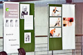

Münchner Alexander-Technik Kooperation
Ihre Anlaufstelle für Alexander-Technik in Südbayern
Die 2. Münchner Woche für Seelische Gesundheit
Nachlese zu Veranstaltungen von
Lehrerinnen der Münchner Alexander-Technik Kooperation

Bewegen Sie den Mauszeiger über ein Foto für eine Großansicht...
Messe
Die Münchener Alexander-Technik Kooperation war der Anziehungspunkt auf der 1. Messe für Seelische Gesundheit im Oktober 2010. Ein gleichermaßen professioneller wie unkonventioneller Messestand lockte viele Besucher an. Unermüdlich gaben die Lehrerinnen der Alexander-Technik Auskünfte und verhalfen den vielen Interessierten vor Ort zu direkten Erfahrungen über die Wirkungsweise der Methode. Unterschiedliche „alexandrische“ Slogans – Blickfänger auf den grün-grauen Outfits der Akteure – waren Aufhänger für vielfältige Fragen und oft der Einstieg ins praktische Kennenlernen:
„Alexander-Technik – bis heute wusste ich gar nicht, dass es so was gibt. Das ist schon eine sehr besondere Arbeit – sehr subtil, aber es passiert eine Menge. In mir, mit mir. Schön, dass ich das hier gleich so praktisch ausprobieren konnte“.
Die Kernaussage der Kooperation „Konkret-Wirksam-Vielseitig“ bestätigte sich eindrücklich für Therapeuten und Betroffene, die sowohl in praktischer Arbeit als auch im Gespräch umfassende Auskunft zu verschiedensten Anliegen erhielten. Selbst im größten Trubel bewiesen die Alexander-Lehrerinnen Gelassenheit. „Die bewegte Ruhe und das Vertrauen der Besucher“ auf einer Präsentationsfläche, die nicht selten auch die Gänge außerhalb des Standes mit einbezog, wurde von anderen Ausstellern als „bemerkenswert und außergewöhnlich“ betitelt.
Schnuppernachmittag
Bereits am Vortag hatten sechs Alexander-Lehrerinnen den angekündigten „Schnuppernachmittag mit offenem Kommen und Gehen“ spontan zur Einführung in die Alexander-Technik umfunktioniert: denn weit vor 13:00 Uhr standen bereits mehr als 20 Interessierte vor der Tür der ESG und wollten eine Antwort auf „Was ist denn die Alexander-Technik?“ Nach dieser professionell improvisierten halbstündigen Einführung ging es ans praktische Erleben des Gehörten. „Aha“ und „Ach, so ist das“ kam mehrheitlich aus verblüfften Mündern. Um 16:00 Uhr verabschiedete die Münchener Kooperation mehr als 40 überraschte, verwunderte und begeisterte Besucher.